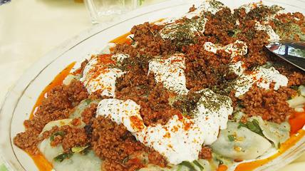

aaaa
- Step 1: 1/2 pound gandana, leeks or chives, washed and finely chopped,1 tables spoon oil , black pepper and salt to taste, mix all the ingredient togethers. Knead until the chives or leeks become soft. Put 1 to 2 teaspoons of the drained leeks on half of the rounds. Use the other half to cover the leeks thanks to my husband he did help me for the filling takes too much time as he say. Place the prepared ashak on to a floured tray. Do not place on top of each other as they will stick together.
- Step 2 : Prepare the meat sauce Heat the oil in a pan, add the finely chopped onion , 2 crashed gloves garlic and fry until they are brown. Add the meat 1/2 pound ground meat, cover the pan and let them cooked. When the meat become brown Add salt to taste , 1/2 teaspoon red pepper ,1 teaspoon coriander and 1 teaspoon turmeric Mix in the tomato juice ( 1 can tomato sauce 0 and bring to a boil. Stir well, then lower the heat and simmer . then add the gurbanzo ( 1 can ) and cooked for few minutes until the sauce is thick .
- step 3: Boil the dumpling Bring water to a boil in a large pan and then drop in the dumpling and boil gently for about 10 minutes, then Drain them.
- step 4: Serve Ashak Once you done put the dumplings in a plate on top of the yogurt , Cover with the remaining yogurt and meat sauce ,sprinkle with the dry mint.